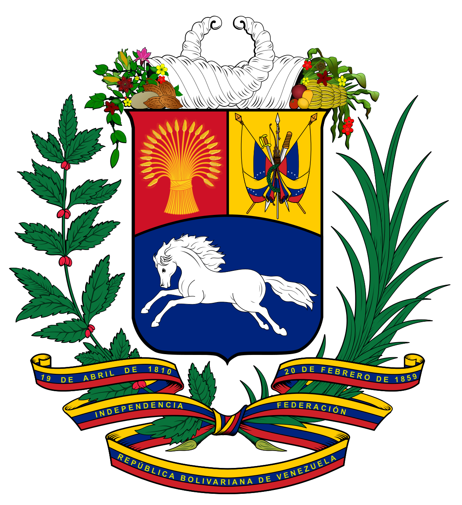

The future of Python and AI
As the world of technology continues to expand, so does the potential for Artificial Intelligence (AI) and Machine Learning (ML). Now, more than ever, the Python programming language is becoming an increasingly important part of the AI and ML landscape. This is due to the increasing number of Python libraries and frameworks available to developers, allowing them to quickly and easily build powerful applications and systems.
But what does the future of Python and AI look like? What possibilities does the combination of the two bring?
Python and AI are an ideal combination for a number of reasons. Firstly, Python is an easy-to-learn language, meaning that developers of all experience levels can pick up the basics quickly and begin building powerful applications. It is also an incredibly versatile language, allowing developers to create applications for a wide range of industries, from finance to healthcare.
Secondly, Python is an open-source language, meaning that developers can access and use the code for free. This makes it a great option for people who don’t have the resources to purchase expensive software or licenses.
Finally, Python is an incredibly powerful language that can be used to create complex algorithms and powerful AI applications. By combining Python and AI, developers can create smarter applications that can learn from data and make decisions based on their findings.
The future of Python and AI looks very promising. As more people become interested in the technology, more frameworks and libraries will be developed to make it easier for developers to create powerful applications. Furthermore, the increasing availability of open source libraries and frameworks will help to drive down costs and make AI applications more accessible to developers of all experience levels.
Ultimately, the combination of Python and AI will continue to revolutionize the way we interact with technology and make our lives easier. By leveraging the power of both languages, developers can create smarter applications that can learn from data and improve over time.